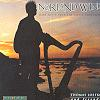

Celtic Lyrics Corner > Artists & Groups > Norland Wind > Norland Wind
|  |
Norland Wind
(2002) |
| Tracks : |
1. Rime On The Moor
2. Norland Wind 3. Dance For The Hedgehog's Feet 4. An Early Morning 5. The Tipsy Elk 6. Siúbhán Ní Dhuibhir 7. Tór Mór 8. Life Of A Miner 9. Moose On The Loose 10. The Ladybird 11. The Promenade 12. The Shamrock Soil No More 13. Loch Ossian |